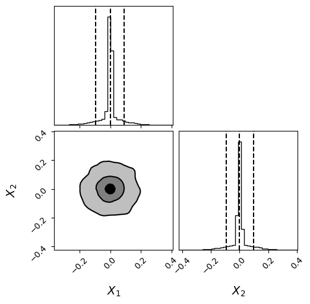

Peak Sampling: Evidence for a Bimodal-Scale Gaussian#
This notebook estimates the Bayesian evidence (ln Z) for a bimodal-scale Gaussian benchmark — two isotropic Gaussians sharing the same centre but with very different widths — using:
Dynesty for posterior sampling via nested sampling
MorphZ for evidence estimation from the posterior samples
1. What We Are Computing#
Parameters \(\theta \in \mathbb{R}^D\) live in a uniform prior box \(\left[-\tfrac{1}{2},\, \tfrac{1}{2}\right]^D\).
Prior: $\( p(\theta) = 1, \quad \theta \in \left[-\tfrac{1}{2},\, \tfrac{1}{2}\right]^D \)$
Likelihood — sum of two isotropic Gaussians centred at the origin with widths \(v = 0.1\) (broad) and \(u = 0.01\) (narrow): $$ \mathcal{L}(\theta) = \mathcal{N}(\theta;, \mathbf{0},, v^2 I_D)
\mathcal{N}(\theta;, \mathbf{0},, u^2 I_D) $$
Challenge: The narrow component (\(u = 0.01\)) dominates the posterior peak but contributes negligible volume. A sampler must adequately explore both scales to yield an accurate evidence estimate.
Evidence: $\( Z = \int \mathcal{L}(\theta)\, p(\theta)\, \mathrm{d}\theta \)$
Because both Gaussians are almost entirely contained within the prior box (their widths are much smaller than \(\tfrac{1}{2}\)), each integrates to 1, giving the closed-form result: $\( \ln Z = \ln 2 \approx 0.6931 \)$
2. Imports#
import numpy as np
import matplotlib.pyplot as plt
import morphZ
import corner
import numpy as np
import dynesty
from dynesty import utils as dyfunc
3. Numerical Helpers#
Summing log-probabilities requires numerically stable log-sum-exp routines to avoid floating-point overflow or underflow.
log_plus(x, y)computes \(\log(e^x + e^y)\) stably by factoring out the larger term: $\( \log(e^x + e^y) = \max(x,y) + \log\!\left(1 + e^{\min(x,y) - \max(x,y)}\right) \)$log_sum(vec)extends this sequentially to a vector of log-probabilities.
def log_plus(x,y):
if x > y:
summ = x + np.log(1+np.exp(y-x))
else:
summ = y + np.log(1+np.exp(x-y))
return summ
def log_sum(vec):
r = -np.Inf
for i in range(len(vec)):
#print('element:',vec[i])
r =log_plus(r, vec[i])
#print(r)
return r
4. Model Definition#
We define the log-likelihood, log-prior, and log-posterior as scalar functions of a parameter vector \(\theta \in \mathbb{R}^D\).
Log-likelihood — log of the sum of two isotropic \(D\)-dimensional Gaussians: $\( \ln \mathcal{L}(\theta) = \log\!\Bigl[ \mathcal{N}(\theta;\, \mathbf{0},\, v^2 I_D) + \mathcal{N}(\theta;\, \mathbf{0},\, u^2 I_D) \Bigr] \)$
with \(v = 0.1\) and \(u = 0.01\). The outer log is evaluated via log_plus to avoid numerical underflow.
Log-prior — uniform box: $\( \ln p(\theta) = \begin{cases} 0 & \theta \in [-0.5,\, 0.5]^D \\ -\infty & \text{otherwise} \end{cases} \)$
Log-posterior: $\( \ln \pi(\theta) = \ln \mathcal{L}(\theta) + \ln p(\theta) \)$
def lnlikefn(x):
u = 0.01
v = 0.1
x1 = np.sum(-(x**2)/(2*v**2))-len(x)*np.log(np.sqrt(2*np.pi)*v)
#print(x1)
x2 = np.sum(-((x-0)**2)/(2*u**2))-len(x)*np.log(np.sqrt(2*np.pi)*u)#+np.log(100)
#print(x2)
return log_plus(x1,x2)
def lnpriorfn(x):
if np.any((x < -0.5) | (x > 0.5)): # Check if x is outside the cube
return -np.inf
return 0.0
def lnprobfn(x):
return lnlikefn(x) + lnpriorfn(x)
5. Run Dynesty Nested Sampler#
We use Dynesty to draw posterior samples via nested sampling with \(n_\text{live} = 25D\) live points.
The prior transform maps the unit hypercube \([0,1]^D\) uniformly to \([-0.5,\, 0.5]^D\): $\( \theta_i = u_i - 0.5, \qquad u_i \sim \mathrm{Uniform}(0, 1) \)$
After the run, Dynesty returns importance-weighted samples \(\{(\theta^{(k)},\, w^{(k)})\}\). We call resample_equal to draw an unweighted posterior sample for use with MorphZ.
ndim = 20 # number of parameters/dimensions
# nlive = 20 * ndim # number of live points (analogous to nwalkers)
nlive = 25 * ndim # number of live points (analogous to nwalkers)
# Define the prior transform: maps a unit cube (0,1) to the prior volume.
# For a uniform prior between -0.5 and 0.5 for each parameter:
def prior_transform(u):
# u is a 1D array of ndim values in [0, 1]
return -0.5 + u # scales u to [-0.5, 0.5]
# Create the nested sampler instance.
# Run the nested sampling.
# Note: print_progress=True shows the progress.
NN = 1
log_z_NS = np.zeros(NN)
log_z_NS_err = np.zeros(NN)
for i in range(NN):
sampler = dynesty.NestedSampler(lnlikefn, prior_transform, ndim, nlive=nlive)
sampler.run_nested(dlogz=0.00000001, maxiter=2000000,print_progress=True)
res = sampler.results
log_z_NS[i] = res.logz[-1]
log_z_NS_err[i] = res.logzerr[-1]
# Get posterior samples.
# dynesty provides weighted samples; here we compute equal-weight samples.
samples_ns, weights = res.samples, np.exp(res.logwt - res.logz[-1])
posterior_samples = dyfunc.resample_equal(samples_ns, weights)
45104it [01:22, 545.54it/s, +500 | bound: 586 | nc: 1 | ncall: 1752119 | eff(%): 2.604 | loglstar: -inf < 73.399 < inf | logz: 1.702 +/- 0.312 | dlogz: 0.000 > 0.000]
6. Posterior Corner Plot#
We visualise the first two dimensions of the posterior to confirm the sampler explored both scale components. Because both Gaussians are centred at \(\theta = \mathbf{0}\), the marginals should show a single sharp central peak (narrow component, \(u = 0.01\)) surrounded by broader wings (wide component, \(v = 0.1\)).
fig = corner.corner(
posterior_samples[:,:2], bins=40,labels=[r"$X_{1}$",r"$X_{2}$"],label_kwargs = {"fontsize": 14},truth_color="dodgerblue",hist_kwargs={"density": True},quantiles=[0.05, 0.5, 0.95],
show_titles=False,
fontzise=24,
title_fmt=".2f",
plot_datapoints=False,
fill_contours=True,
levels=(0.5, 0.8, 0.95),
smooth=1.0
)
plt.show()

7. Estimate ln(Z) with MorphZ#
We thin the posterior samples by a factor of 30 to reduce autocorrelation, then pass them — together with the corresponding log-posterior values — to morphZ.evidence().
MorphZ uses the pair morph strategy with a Silverman-bandwidth KDE to estimate: $\( \ln Z = \ln \int \mathcal{L}(\theta)\, p(\theta)\, \mathrm{d}\theta \)$
The analytical result is \(\ln Z = \ln 2 \approx 0.6931\).
# import logging
# from morphZ import setup_logging; setup_logging(level=logging.INFO)
samples = posterior_samples[::30,:] # total_samples[::20,:]
tot_len , ndim = samples.shape
print('Total samples:', tot_len, 'Dimensions:', ndim)
log_prob = np.zeros(tot_len)
for i in range(tot_len):
log_prob[i] = lnprobfn(samples[i,:])
log_p_estimate = morphZ.evidence(
samples,
lnprobfn,
log_prob,
n_resamples=2000,
thin=1,n_estimations=2,morph_type="pair",kde_bw="silverman",plot=False,output_path='./morphZ_peak_sampling_new')
#print('True:', np.log(2))
print('True log(z) for A=1:', np.log(2))
print('MorphZ estimate:', log_p_estimate[0])
print(f'NS log(z): {res.logz[-1]} +/- {res.logzerr[-1]}')
Total samples: 1521 Dimensions: 20
True log(z) for A=1: 0.6931471805599453
MorphZ estimate: [0.6998277744777064, 0.261436116805889]
NS log(z): 1.7024361862932529 +/- 0.31207386544757665
8. Summary#
Step |
What to do |
|---|---|
Model |
Define |
Prior |
Uniform box \([-0.5,\, 0.5]^D\); return \(-\infty\) outside |
Sampling |
Run Dynesty with |
Check |
Corner plot to confirm both scale components are present |
Log-posterior |
|
Evidence |
Thin samples, pass to |
Note: For posteriors with widely separated scales (rather than separated locations), nested sampling naturally explores both scales through its shrinking live-point volume. If using MCMC instead, ensure the step size is large enough to move between the two scale regimes.